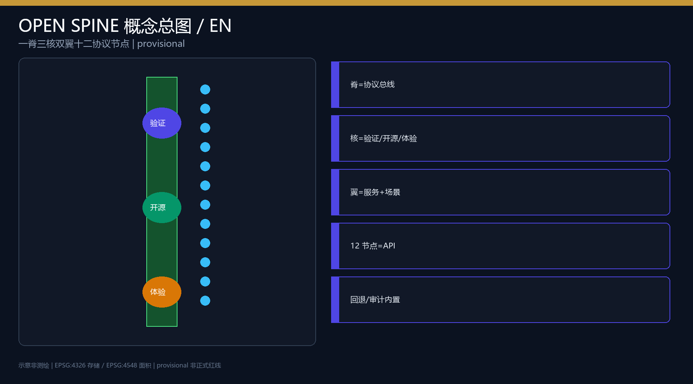
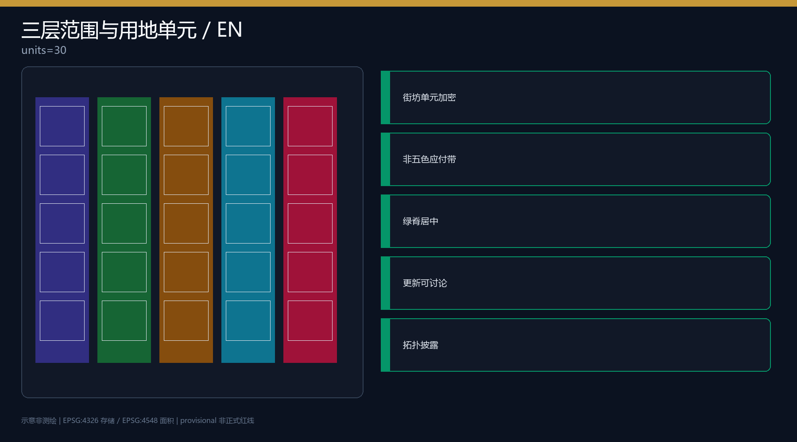
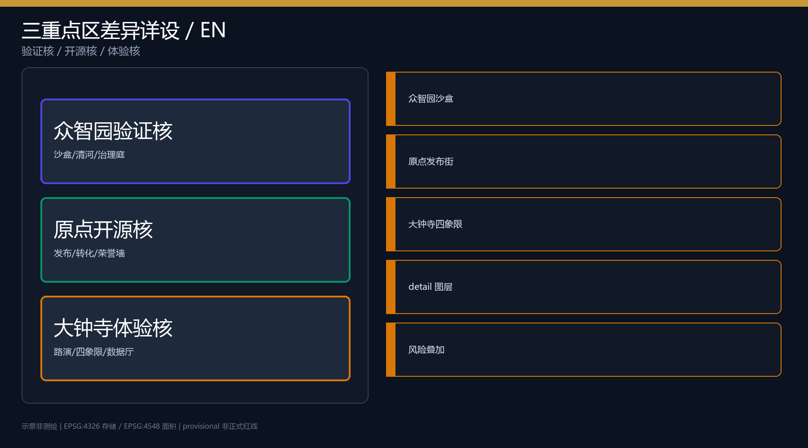
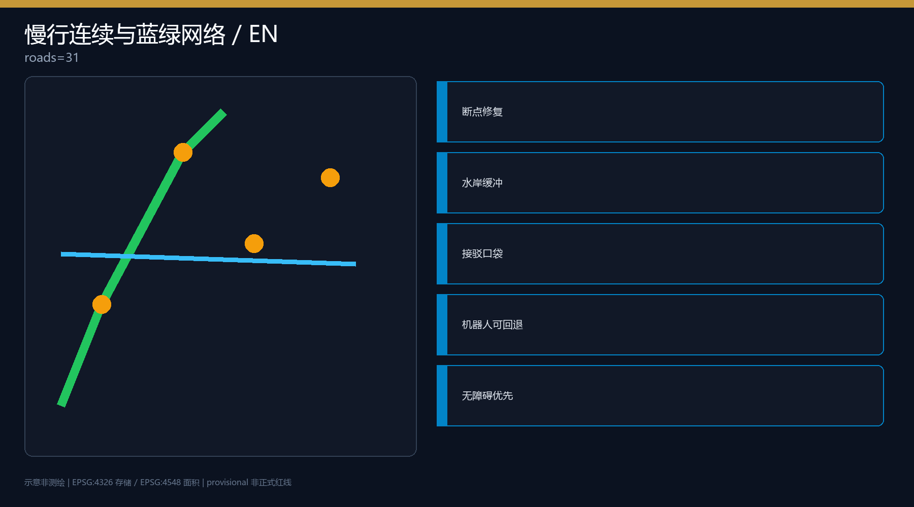
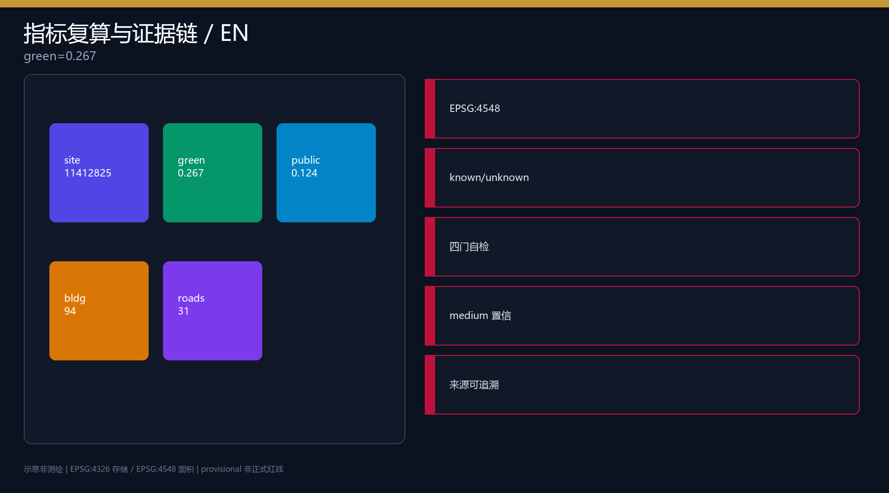

JingZhang Open Spine · Protocol Edition (v2)
v2 upgrades JingZhang Open Spine into an Open Protocol Spine City API (interface/permission/rollback/audit) with denser geometry, key-area detail templates, real boards and offline projected maps on provisional boundaries.
JingZhang Open Spine · Protocol Edition (v2)
Design Basis and Source List
This formal v2 package is based on the Haidian pre-qualification announcement and the machine-readable site package 来源 来源. Agent tasks follow the open-call taskbook 来源. Source fitness follows the registry 来源.
Coordinates are stored in EPSG:4326; areas are recomputed via EPSG:4548, recorded in crs_note / equal_area_projection 深度. Boundaries are provisional, not official redlines 来源 空间数据.

Brand minimum set: assets/brand/logo.svg (sleeper + OPEN window). No unauthorised trademarks.
Three-Level Scope Framework
Coordinated research (~43.6 km²), overall design (~11.4 km², 指标=11412825.386 m² provisional), and key detailed design (~368.4 ha, 指标=3) 深度. Structure remains one spine / three cores / dual wings / twelve nodes, now governed by the Open Protocol Spine City API 深度.

Regional interfaces (one action each)
Future Science City joint pitch slots; Huairou evaluation feedback; E-Town product pilot loop; Zhongguancun north sandbox booking; Jing-Jin-Ji gateway via Dazhongsi — all conceptual coordination, not administrative commitments.
Coordinated Research Area: Industry and Future City Research
Tip mechanism: Open Protocol Spine
See mechanism section in proposal. Mandatory fields: Interface, Permission (public/aggregate/authorized/forbidden), Rollback, Audit. Naming: 京张智脊 / JingZhang Open Spine / Open Protocol Spine.
Cases (3 deep + 3 light)
Deep: Kendall Square (campus triangle → Origin transfer street); King’s Cross (station-city ops → Dazhongsi pockets); one-north (test corridors → Zhongzhiyuan sandbox). Light: Nanshan density, Toranomon vertical courts, Zhangjiang platforms. Do not copy foreign ownership models 来源 标准.
Overall Design Area: Urban Renewal and Regulatory-Plan-Level Urban Design
Regulatory-plan method without fake FAR/height/redlines 标准 深度. Land-use densified to 30 units covering the site 空间数据 指标 深度. Buildings 94, road segments 31 指标 指标. Renewal priority: public interfaces first, deep rebuild later.
Detailed Design of Key Areas
Provisional KEY_AREA polygons; directional concepts only 深度 空间数据.

Zhongzhiyuan · Verification Core
Role: autonomy, standards, safety testing host. Problems: test disturbance, northern severance. Structure: Qinghe verification waterfront + sandbox court + cross seam (detail_zhongzhiyuan.geojson). Scenarios SCN-02/04/12 with red-team review. Near-term OS-02/06/12. Risks: noise/privacy; blue-line and energy permits pending. RRD typology only 深度.
AI Origin · Open-source Core
Role: campus transfer, release, talent services. Problems: visible-but-inaccessible edges; event vs daily conflict. Structure: release hall—transfer street—honor wall (detail_beijing_ai_origin.geojson). Scenarios SCN-01/06/11. Near-term OS-03/04/07. Risks: campus data authorisation and night noise.
Dazhongsi · Experience Core
Role: intelligent economy and station-city host. Problems: weak four-quadrant walking; data ethics. Structure: four-quadrant pockets + pitch + data parlor (detail_dazhongsi.geojson). Scenarios SCN-05/07/10. Near-term OS-05/08/10. Risks: event permits and traffic specialty studies.
AI Innovation Ecosystem, Personas, and AI+ Scenarios
Six personas including caregivers/accessibility users. Twelve objectified scenario cards with place ids, minimization, human review, rollback, pilot KPI and non-goals; ≥3 industry validation tests (SCN-02/04/07) 指标 空间数据.
Land Use, Building Scale, and Retain-Renovate-Demolish Strategy
Topology coverage reported in topology checks used for metrics 标准. Building footprint 指标=440855.459 m²; density 指标 is conceptual; FAR unknown 指标. Character principles without fake heights 深度.
Transport, Rail, Municipal Infrastructure, and Public Services
Open slow spine + classed seam network + station pockets; 31 conceptual segments, not redlines 空间数据 深度 指标. Robot pilots only on reversible segments yielding to pedestrians. Edge compute remains non-engineering without utilities 深度.

Blue-Green Network, Public Space, and Urban Character
Green ratio 指标=0.267228; public ratio 指标=0.123652 空间数据 空间数据 深度 标准. Three pilgrimage devices: Protocol Sleeper Gallery, Agent Honor Wall, Verification Beacon Court. Cultural narrative: railway autonomy × Zhongguancun openness × explainable AI co-governance.
Renewal Projects, Implementation Policy, and Phasing
Fourteen projects OS-01…OS-14 with conceptual lead actors, dependencies, spatial ids, KPIs and rollback paths, coupled to phasing polygons 空间数据 深度 深度 指标. Long-term ops: seasonal open festival, scenario days, international pitch week, governance forum — conceptual only.
Metrics, Area Recalculation, and Compliance Matrix
Known metrics recomputed via EPSG:4548 at medium confidence under provisional geometry; statutory controls remain unknown 深度. Matrices cover announcement tasks and agent.1–6 with unique depth evidence summaries.

Risk, Copyright, and Compliance
Risks: provisional precision, ownership, utilities, heritage, event noise, privacy, robot conflicts 深度 空间数据. Data grades enforced. Copyright in report/copyright_statement.md. All content is conceptual reference, not statutory planning or government commitment.
References
- brief package, agent taskbook, source registry, provisional boundaries
- local standards references
- mechanism_onepager.md, topology_check.json, redteam_checklist.md
- machine indexes in sources/metrics/matrices 来源